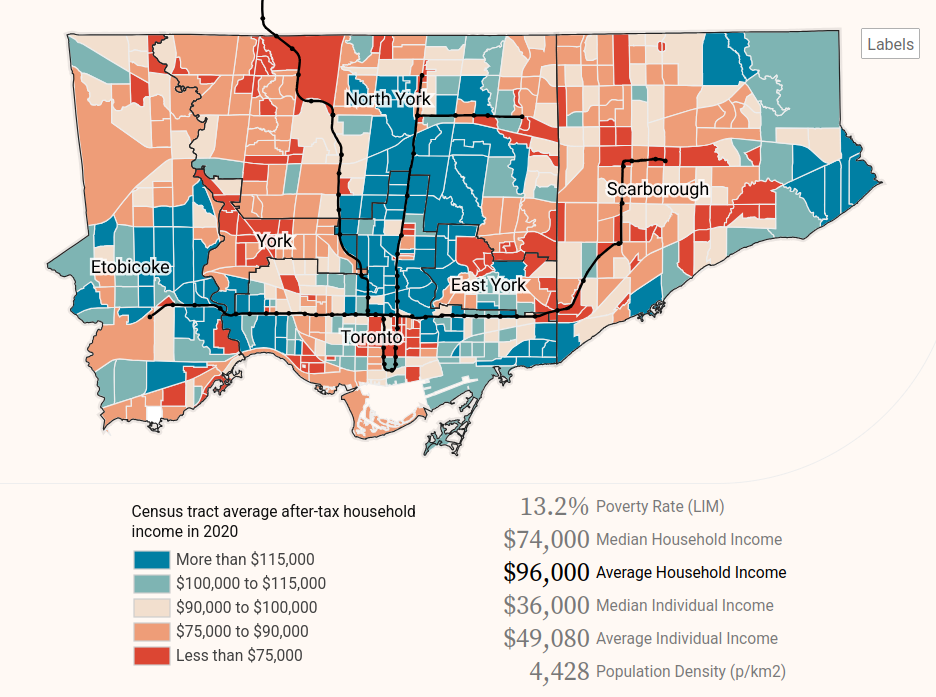

Introduction to urban data
Where does data come from?
In data analysis, understanding the type and origin of data is essential to choosing the right methods for analysis, limitations in the data, and interpreting results. The following categories outline common types of data sources that we often encounter. These sources vary in how and why they are collected.
| Data source type | Description | Examples |
|---|---|---|
| Designed/Survey | Data collected through surveys, experiments, or designed methods. | Census data (historical or current), research surveys, opinion polls |
| Administrative | Data from routine operations or official records. Often open or public when government-run. | City records (public housing locations, public transit data), tax records, healthcare data (historical and current), school enrollment data |
| Crowdsourced | Data contributed by the public or community-driven platforms. | OpenStreetMap (OSM), Wikipedia, social media data, 311 data, Google reviews |
| Event-Driven/Real-Time | Data generated from sensors, transactions, or interactions. Often continuous and time-sensitive. | Satellite data, mobile phone GPS, IoT sensors, e-commerce transactions, website clicks |
| Derived data | Data created by transforming or calculating metrics from existing data or simulations. | Indices like low-income prevalence or social deprivation, environmental quality scores, simulated datasets for testing or model training |
Sometimes data can be a combination, for example, both the United States Census Bureau and Statistics Canada collect a combination of survey data and administrative data.

Data availability
Data availability refers to how accessible data is and the conditions under which it can be used. Key categories include:
Public / Open data - Data that is freely accessible to anyone and can be reused without restrictions. Open data is often provided by governments, research institutions, and public organizations. It is typically non-sensitive and available in machine-readable formats. Examples include aggregated census data, municipal open data, and OpenStreetMap.
Restricted data Data that is available but comes with limitations due to privacy, security, or legal concerns. This includes sensitive datasets such as health data, dis-aggregate census data, and government records with personal identifiers that are redacted or protected.
Proprietary data - Data that is owned by a specific entity (e.g., a corporation or private organization) and is not freely available. Access is typically granted through licenses, paid subscriptions, or agreements. For example, cell phone mobility data from Spectus can be used to measure post-pandemic downtown recovery trends, real estate data from Costar can be used to assess vacancy rates or rent prices, and consumer data from Data Axle can be used to study the impact of new housing on migration patterns.

Data sources for urban analysis
The table below lists a handful of websites where you can find publicly available data about cities, the environment, land use, transportation, Indigenous communities, housing and homelessness. This is a non-exhaustive list; there are many other great data sources available. Note that municipalities’ open data portals typically contain information on all or most of these topics.
Web scraping, or extracting information from the internet, is another method for creating datasets. Since the data do not already exist and must be created, this can be more time-intensive than using existing datasets. However, packages like beautifulsoup or selenium in Python make this process easier.
Data formats
Data format refers to how data is stored and structured. In practice, this is most relevant when loading and saving data. The data format you choose to use depends on the data’s size, structure, use, how it is being stored, and whether it is spatial (has a geometry column) or not.
Some of the most common data formats for non-spatial data are:
- CSV (comma separated values)
.csv - Excel
.xlsx - JSON (JavaScript Object Notation)
.json - XML (Extensible Markup Language)
.xml
Some of the most common data formats for spatial data are (see Spatial data & GIS for more information):
- GeoJSON
.geojson - GeoPackage
.gpkg - Shapefile
.shapfile - Geodatabase
.gdb
While the file formats above suffice for relatively small or simple datasets, very large or complex datasets require more efficient storage via formats like Parquet (see instructions for Python). Relational databases are another commonly used data storage format for “big data” because they are more efficient, faster to query, more secure, and can be accessed by multiple users.
Data types
It’s important to make sure that each variable in your dataset is in the right format so the computer interprets it correctly. For example, if you load a .csv file with a column representing the population of a neighbourhood, you would want to make sure this variable is interpreted as a number and not a string of characters so you can easily use this column to calculate additional statistics (e.g. sum of population in all neighbourhoods, population density in each neighbourhood).
See the table below for a list of common data types used in data analysis software.
| Data Type | Description | Example |
|---|---|---|
| Integer (int) | Whole numbers without decimal points. | 5, -3, 42 |
| Float | Numbers with decimal points, representing real numbers. | 3.14, -0.001, 2.718 |
| String (str) | A sequence of characters, used for textual data. | "Hello", "Data analysis", "123" |
| Boolean (bool) | Represents binary values: True or False. |
True, False |
| List | Ordered collection of items, can contain different data types. | [1, 2, 3], ["apple", "banana"] |
| Tuple | Immutable sequence of items, like lists but cannot be modified. | (1, 2, 3), ("apple", "banana") |
| Dictionary (dict) | Collection of key-value pairs, often used for mapping. | {"country": "Alice", "age": 30} |
| DateTime | Used for representing date and time. | 2025-04-09 14:32:00, 2021-01-01 |
| Set | Unordered collection of unique items. | {1, 2, 3}, {"apple", "banana"} |
| NoneType | Represents the absence of a value, or null. | None |
Different software (e.g. Excel, Python, R, QGIS, etc.) might have slightly different names for each of the above. For example, this page provides a nice summary of data types in Python.
Levels of measurement
While data types specify what kind of data a variable can hold, levels of measurement describe how data is structured and the relationships between different values. They refer to how we can classify and interpret the data in terms of its inherent ordering, spacing, and possible mathematical operations.
Nominal: Categorical data with no inherent order (e.g., colors, countries, land-use types e.g.
Urban,Wetlands,Forest, etc.).Ordinal: Data with a meaningful order, but unknown or not always equal differences between values (e.g., movie ratings like
Good,Okay, orBad, or levels of education e.g.High School,Bachelors,Masters).Interval: Ordered data with equal intervals between values but no true zero (e.g., temperature in Celsius or Fahrenheit, datetime).
Ratio: Ordered data with equal intervals and a true zero point, allowing for meaningful ratios (e.g., length, area, income).
Software and tools
There are hundreds of software and tools for processing, analyzing, and visualizing data.
When choosing which other software to use to analyze or visualize data, one of the main considerations is whether the software is open source or proprietary. Open source software has its source code publicly available and can be modified by anyone on the internet. Proprietary software’s source code is not publicly available, is typically developed and updated by a closed group, and is licensed to users in exchange for payment. Read this article if you’re interested in learning more about the difference between the two.
Spreadsheet software, like Excel, Google Sheets, and LibreOffice calc can be great for viewing and exploring data, as well as quick analyses, they can be super limited for serious data analysis. They struggle with large datasets, lacks robust tools for cleaning and transforming complex data, have very limited options for spatial/geographic data, and makes reproducibility nearly impossible. Plus, it’s easy to introduce silent errors with formulas or copy-pasting. For anything beyond basic summaries or charts, scripting languages like R or Python are far more powerful, reliable, and scalable.
Geographic information systems (GIS), are tools and software specifically for are tools and software designed for analyzing, processing, and visualizing spatial data. There are desktop point-and-click software like QGIS that are great for exploratory and smaller-scale analyses and visualization, while programming languages like Python have many libraries for working with spatial data.
In this course, other than common spreadsheet software, we will focus on open source software because it is free and available to everyone. Below is a list of some of the main open source programming languages, software, and tools that we recommend using for data analysis and mapping.
| Purpose | Software/Tools |
|---|---|
| Analyzing and visualizing data | Python, R, SQL |
| Making pretty graphics | Inkscape, GIMP |
| Web development | HTML, CSS, Javascript |
| Web-based maps and visualization | D3, MapLibre, Protomaps |
| Hosting / project management | GitHub |
Data analysis process
While is no set of specific step-by-step instructions for data analysis – each project involves unique data sources, variables, methodologies, and outputs – but there is a general framework that we recommend following:
- Define the problem or research question. What question are you trying to answer with data? Is data analysis the best way to answer that question? Who is the audience for your data analysis, and what do they want to know?
- Collect data. What kind of data do you need to answer your research question, and where can you find it? Does it exist? In what format?
- Clean data. Make sure the data has appropriate variable names, does not have misspellings or other errors, and the variables are the correct data types. Get rid of any redundant or irrelevant data that you don’t need, and determine a method for dealing with any missing values.
- Analyze data. Start by exploring the data to understand its structure and any statistical patterns. Then perform your analysis – for example, are you trying to uncover trends, or measure the relationship among variables?
- Visualize data. Create plots, maps, or other visual representations that illustrate the structure, trends, or relationships present in your data.
- Present data. Clearly communicate your results to your intended audience. This could involve writing a report, or creating a presentation or interactive dashboard. Whatever gets your message across!
It is important to iterate through some of these steps and make updates as needed. For example, if step 5 (visualize your data) reveals that you have an imbalanced dataset, you may need to go back to step 3 or 4 to address this. And of course once you hit steps 5. and 6., you might find something super interesting in your data that you’ll want to collect more data and repeat the process all over again! :)
Getting help
Learning new software for data analysis or mapping can be confusing and frustrating. Luckily, there are a lot of great resources that can help!
The first place you should look when you’re confused about how to do something is the official documentation. For example, if you’re having trouble loading a CSV file in Python using the pandas package, take a look at the documentation for .read_csv on the pandas website. Or if you’re not sure how to create a spatial buffer in QGIS, check out the QGIS buffer operations page.
If you’re still stuck on a question, Google it! Chances are, someone else has dealt with a similar issue, and there is likely a community of people helping them out. For example, one of the most popular resources for coding is Stack Overflow, a website where programmers ask and answer questions. Responses with the most votes are shown at the top, making it easy to find helpful code snippets and explanations that you can adapt for your own needs. The website is so widely used that Stack Overflow posts will usually show up towards the top when you Google search coding questions.
There are also websites like W3Schools and GeeksforGeeks that offer online courses and tutorials covering everything from sorting a list in Python to building complicated statistical models. These websites show up often as results for relevant Google searches.
And of course there are AI chatbots like ChatGPT. These tools can be extremely helpful for debugging code, writing code, or providing instructions for GIS. However, be careful and don’t trust them blindly, as they are often wrong, and sometimes make up packages or functions that don’t exist. Also, if you use chatbots for help, make sure you understand what they are telling you. Asking for guidance or hints about specific, discrete questions is much better than asking the chatbot to write an entire Python script for you. The more you rely on chatbots, the less you will learn, and the less you will be able to do on your own. Learning data analysis or coding in particular can feel like an uphill battle, but if you start with a solid foundation and thorough understanding of how it works, the better you will be able to prompt and efficiently use chatbots, and importantly you will have a stronger base to then tackle complicated problems in the future.